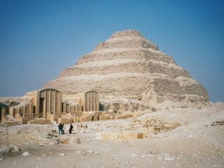
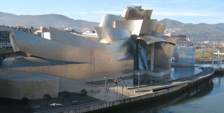

L’architecture est l’art de la conception et de la mise en forme d’espaces de vie : ceux d’une demeure, d’un établissement industriel, comme ceux d’espaces urbains. L’histoire de l’architecture est avant tout le reflet de l’histoire des hommes. Chaque mouvement artistique rencontre une époque, un environnement philosophique, politique ou spirituel bien particulier.
La préoccupation de s’abriter est née il y a bien : dès la préhistoire, l’homme s’abrite dans des cavernes. Cependant, les hommes préhistoriques ne vivent pas dans des grottes mais dans des abris sous les falaises. Ils ajoutent un toit de branchages fermé par des peaux.
L’architecture apparaît simultanément en Mésopotamie et en Égypte.
En Mésopotamie, les vallées de l’Euphrate et du Tigre sont parsemées de ruines, ouvrages constitués de briques de terre, cuites au soleil. Parmi les nombreux apports de la Mésopotamie à l’histoire de l’architecture, il faut noter la conception des villes selon un plan préétabli, l’invention du palais et la forme de la ziggourat.
En Égypte, l’architecture, datant d’il y a 5000 ans et se développant sur les bords du Nil, utilise la pierre. L’architecture égyptienne est principalement religieuse : elle concerne les tombeaux et les temples.
En Grèce, l’architecture est envisagée avec un souci de clarté et d’unité. Les Grecs ramènent à trois ordres les éléments porteurs de l’architecture (l’ordre dorique, noble et strict, l’ordre ionique, gracieux et élégant, et l’ordre corinthien, abondant et somptueux). L’architecture grecque, d’abord réservée aux temples et aux sanctuaires, évolue vers des édifices publics intégrés dans leur environnement, en conservant le même traitement monumental raisonné.
À Rome, l’art de bâtir est mis autant au service de la force de frappe militaire qu’au service de l’unité de l’Empire. Son développement va façonner l’Europe, en autre à travers le développement du réseau routier. L’architecture romaine, moins subtile et plus monumentale que son ancêtre hellène, tend à illustrer pendant trois siècles, la grandeur de la nouvelle capitale du monde.
Au IVème siècle, les chrétiens sortent de la clandestinité dans un Empire romain décadent. L’architecture européenne va alors se tourner vers les monuments religieux avec la construction des premières églises.
L’art Roman apporte une monumentalité à la ferveur religieuse en donnant les prémices d’une architecture qui reçoit la lumière. L’architecture romane prend des formes diverses et connaît des particularismes locaux très affirmés. Cependant, ses caractéristiques demeurent toujours identiques : plan basée sur la croix latine, de une à trois nefs et terminé par une abside.
L’architecture gothique, du 13ème au 15ème siècle, est l’expression d’une économie européenne florissante. Par rapport aux architectures romaines, les édifices de la période gothique présentent de plus grandes dimensions. L’accent est porté sur la verticalité, et les églises sont beaucoup plus éclairées grâce à des murs ajourés et à l’agrandissement des ouvertures.
Du 15ème au 16ème siècle, les écrits antiques de Vitruve (architecte et ingénieur militaire romain qui écrivit De architectura, ouvrage formé de dix livres abordant des sujets divers liés à l’architecture, notamment l’ingénierie, les systèmes sanitaires, l’hydraulique, les vases acoustiques, etc.) et les ruines romaines redécouverts, amènent les artistes à s’engager dans une interprétation rationnelle des éléments classiques. La composition des édifices est ordonnée et s’articule autour d’un module unique et des principes géométriques simples.
Le terme baroque naît du mot portugais « barroco » qui désigne des perles occidentales de formes irrégulières. Dès la fin du 16ème siècle, le pouvoir pontifical est ébranlé par la Réforme, et l’architecture doit séduire. Elle se libère progressivement des règles trop strictes de la Renaissance et tend à des formes libérées, où prime l’abondance des ornements. L’architecture baroque privilégie une accentuation des volumes et donne une impression d’avancée et de recul à travers des effets dynamiques. La prolifération des formes et des lignes obliques accompagne l’exubérance des courbes et des contre-courbes.
À l’instar du Baroque, le Classicisme obéit aussi à un projet politique. Il s’agit cette fois de servir la monarchie absolue du 17ème siècle. Alors que le Baroque fait appel au l’émotion, le Classicisme s’adresse davantage à la raison. Cependant, il poursuit la même recherche du grandiose à travers un art brillant et ostentatoire. Dans l’architecture classique, l’espace se fragmente en même temps qu’on tend à une simplification et à une affirmation de l’unité des volumes. Les effets statiques sont affirmés par une prédominance des lignes horizontales.
La grande architecture classique française ne convient plus à une société issue de la Révolution. Dès la fin du 18ème siècle, l’architecture s’éloigne d’un académisme contraignant en amorçant un retour vers d’anciennes sources.
Le Néoclassicisme se développe pendant la deuxième moitié du 18ème siècle. Après le Rococo et son goût affirmé pour la sensualité et l’intime, une réaction radicale se fait sentir. L’architecture redécouvre l’Antiquité, et va s’en inspirer pour exalter la grandeur et la force. Cela va passer par une austérité du bâti. Les architectures vont ainsi afficher des colonnes qui vont scander les façades, la ligne droite, qui s’impose et supplante la courbe uniquement tolérée pour les coupoles et les fûts de colonnes, le mur et la monochromie sensée être plus proche de la pureté originelle.
Les architectes, afin de répondre aux demandes d’une clientèle bourgeoise désirant afficher leur richesse, vont être amenés à mêler différents styles (antique, oriental, moyenâgeux, gothique). L’éclectisme (nouvelle doctrine architecturale du 19ème siècle) va permettre aux architectes d’utiliser et, au besoin de combiner dans un même édifice, le vocabulaire et les modèles architectoniques que le maître d’œuvre jugeait les mieux adaptés à la spécificité de chaque programme de construction. L’architecture éclectique va progressivement décliner en laissant apparaître une architecture rationaliste, amorce du modernisme européen, plus conforme à l’état d’esprit de l’époque.
À la fin du 19ème siècle, Viollet-le-Duc (architecte français et théoricien de l’architecture) révèle l’évidence de la technique gothique médiévale dans ses écrits. Il réussit également à dégager une nouvelle conception de l’architecture en proposant la mise en place d’une armature métallique dissimulée dans la structure de l’édifice pour consolider les monuments restaurés, L’ingénieur va, de ce fait, prendre une place nouvelle dans l’architecture, en développant de nouveaux systèmes de construction basé sur le métal. (École de Chicago, Gustave Eiffel). Le monde occidental est entré dans l’ère industrielle. De nouvelles techniques de conception et de nouveaux matériaux émergent. L’architecte accompagne cette tendance à l’expérimentation de solutions nouvelles qui se développe à tout niveau. Caractéristiques de l’architecture début de siècle :
À partir de la fin du 19ème siècle, les architectes prirent conscience que les matériaux produits industriellement permettaient non seulement des créer des formes et des structures sans précédents, mais aussi de développer un nouveau langage décoratif.
L’École de Chicago, à partir de 1890, va développer une activité urbaine basée sur la rigueur. Elle mis au point et généralisa l’utilisation de l’acier dans la construction des gratte-ciel, réalisant une véritable révolution du bâti. Ces gratte-ciel devinrent également récurrents afin de rationnaliser au maximum l’emprise foncière des bâtiments dans des villes où le coût des terrains s’accroissait régulièrement. > L’Art Nouveau va s’insurger contre le rationalisme géométrique de l’ère industrielle. Il va mettre la courbe à l’honneur, autant dans ses représentations florales que géométriques, dans les arts décoratifs que dans l’architecture.
L’Art Nouveau va rechercher l’effet par d’une grande liberté d’expression inspirée par les formes souples des végétaux. Elle rassemble des maîtres de l’artisanat et des architectes, affirmant ainsi l’unité de l’art et de la technique.
À la même époque les précurseurs de l’architecture moderne découvrent les possibilités du béton armé, vont énoncer les bases pour un urbanisme dit fonctionnel, et développer des bâtiments aux lignes et aux volumes simples, dépourvus d’ornementation.
Déjà amorcé au siècle précédent, l’éclatement des genres et des styles se confirme au 20ème siècle. Désir de liberté, rejet des groupes et des étiquettes, affirmation de l’individualisme … Une architecture dite « moderne » va alors se développer. Elles se caractérisent par la cohésion entre le contenu et la forme, avec des structures affirmées.
Pour parler de l’architecture qui se développe en Europe et aux États-Unis entre les deux guerres, on utilise généralement le qualificatif de « mouvement moderne ». Cela correspond à l’effort commun de plusieurs architectes pour prendre leurs distances par rapport aux styles académiques. Pour cela, ils vont utiliser de nouveaux matériaux et technologies, et éliminer les éléments décoratifs inutiles et superflus. Divers courants architecturaux vont tendre à développer une architecture rationnelle.
L’histoire de l’architecture et de l’urbanisme s’est accélérée au cours des dernières décennies et a connu des transformations radicales. Les architectures contemporaines peuvent être en gros classées suivant quatre principes distincts :
(tendances européennes) Dans l’immédiat après-guerre, l’architecture moderne en Europe est surtout un instrument pour résoudre des problèmes très concrets comme la reconstruction des villes endommagées par la guerre ou la reconstruction de logements fonctionnels et économiques pour les nouvelles masses de travailleurs. Dans la majorité des cas, ceux sont des bâtiments impersonnels.
Dans la seconde moitié du 20ème siècle, s’affirme une tendance communément appelé « high-tech », qui fonde ses racines dans l’architecture de fer du 19ème siècle. La conception de ces architectures fonde son esthétique sur l’expressivité des éléments constructifs dérivés du monde de l’ingénierie et de la technologie. Les techniques traditionnelles comme le mur en de briques, sont abandonnées en faveur de nouvelles structures et matériaux : acier, panneaux métalliques légers, plastiques.
Dans les années 1980 et 1990, une attitude émerge, s’opposant à la rationalité ordonnée de l’architecture moderne. Les éléments conventionnels de l’architecture sont décomposés et recomposés en formes apparemment incohérentes qui défient les lois de la gravité. Les traits récurrents de ce mouvement sont généralement l’oblique, l’instabilité, la dysharmonie dans les rapprochements de formes et de matériaux, l’irrégularité.